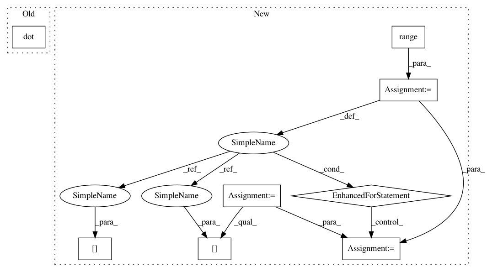

ab4d0a6e6cded5c967d601da6000b8c50b5c65ef,gpytorch/utils/toeplitz.py,,sym_toeplitz_derivative_quadratic_form,#Any#Any#,243
Before Change
dT_dc_row = utils.reverse(left_vector)
dT_dc_col[0] = dT_dc_row[0]
res = res + toeplitz_matmul(dT_dc_col, dT_dc_row, utils.reverse(right_vector))
res[0] -= left_vector.dot(right_vector)
return res
After Change
res = torch.zeros(m)
for j in range(s):
dT_dc_row = left_vectors[j]
dT_dc_col[0] = dT_dc_row[0]
res += toeplitz_matmul(dT_dc_col, dT_dc_row, right_vectors[j])
dT_dc_row = utils.reverse(left_vectors[j])
dT_dc_col[0] = dT_dc_row[0]
res = res + toeplitz_matmul(dT_dc_col, dT_dc_row, utils.reverse(right_vectors[j]))
res[0] -= (left_vectors * right_vectors).sum()
return res
In pattern: SUPERPATTERN
Frequency: 3
Non-data size: 8
Instances
Project Name: cornellius-gp/gpytorch
Commit Name: ab4d0a6e6cded5c967d601da6000b8c50b5c65ef
Time: 2017-09-08
Author: ruihan.wu14@gmail.com
File Name: gpytorch/utils/toeplitz.py
Class Name:
Method Name: sym_toeplitz_derivative_quadratic_form
Project Name: geomstats/geomstats
Commit Name: 16d562f2d1a8df49fde1a2374c5e634a7400fd08
Time: 2018-02-04
Author: ninamio78@gmail.com
File Name: geomstats/special_euclidean_group.py
Class Name: SpecialEuclideanGroup
Method Name: group_exponential_barycenter
Project Name: cornellius-gp/gpytorch
Commit Name: ab4d0a6e6cded5c967d601da6000b8c50b5c65ef
Time: 2017-09-08
Author: ruihan.wu14@gmail.com
File Name: gpytorch/utils/toeplitz.py
Class Name:
Method Name: sym_toeplitz_derivative_quadratic_form
Project Name: geomstats/geomstats
Commit Name: 2e296adb05f62e4821c36b6f42b1470bdb10eaa6
Time: 2018-02-05
Author: ninamio78@gmail.com
File Name: geomstats/special_euclidean_group.py
Class Name: SpecialEuclideanGroup
Method Name: inverse